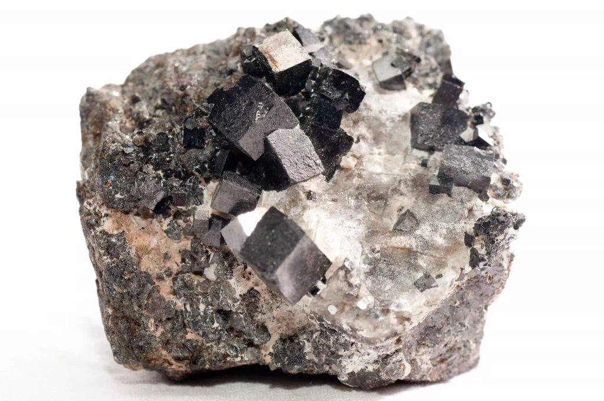
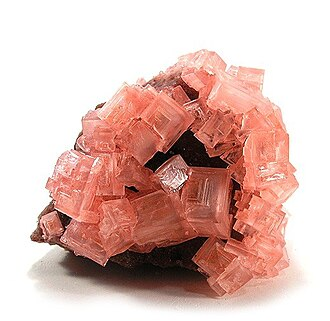
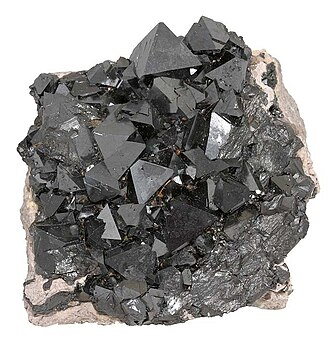
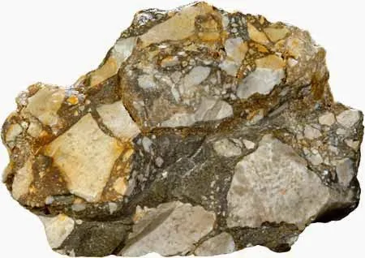
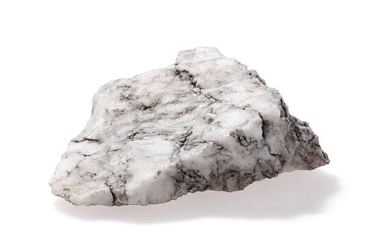
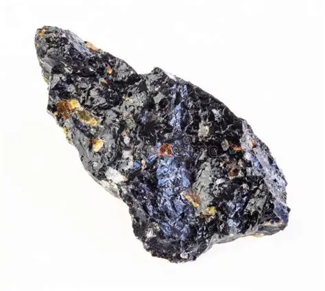

Minerais




- Composição química: possuem composição química definida ou dentro de limites específicos.
- Estrutura cristalina: apresentam organização interna dos átomos em padrões ordenados.
- Dureza: possuem diferentes níveis de resistência a riscos, medidos pela Escala de Mohs.
- Brilho: podem apresentar brilho metálico, vítreo, sedoso ou adamantino.
- Cor: podem ter cores variadas, dependendo de sua composição e impurezas.
- Clivagem e fratura: podem se romper em planos definidos ou de maneira irregular.
Rochas



- Composição: são formadas por um ou mais minerais.
- Textura: apresentam diferentes tamanhos, formas e disposições dos grãos minerais.
- Cor: variam conforme os minerais presentes em sua composição.
- Origem: podem ser classificadas em magmáticas (ígneas), sedimentares ou metamórficas.
- Formação: surgem por processos naturais, como o resfriamento do magma, a deposição de sedimentos e a transformação de rochas preexistentes.
- Resistência: apresentam diferentes níveis de dureza e resistência ao desgaste, dependendo de sua composição e formação.